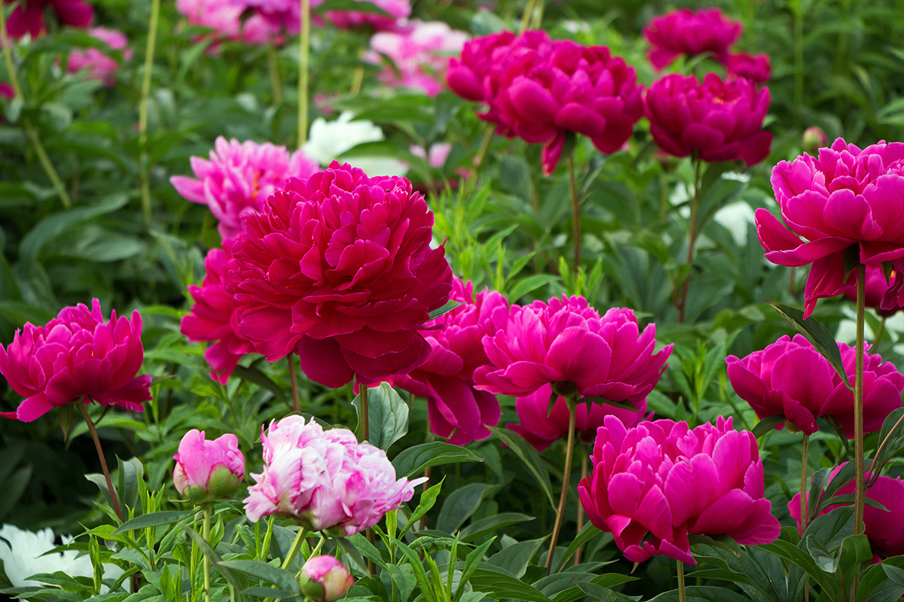

Peonies
General Information
Peonies are long-living perennials with large, fragrant blooms. Many varieties can live for decades.
Where They Grow
Sun: Full sun to light shade.
Soil: Fertile, well-drained.
Climate: Cold winters needed for proper blooming.
Home Care & Tips
- Water deeply but not often.
- Support heavy flowers with rings or stakes.
- Do not plant too deep—the buds should be just under soil.
Recommended Home Locations
- Garden beds with full sun.
- Flower borders.
- Large outdoor planters (wide & deep).
- Never indoors (needs winter cold dormancy).